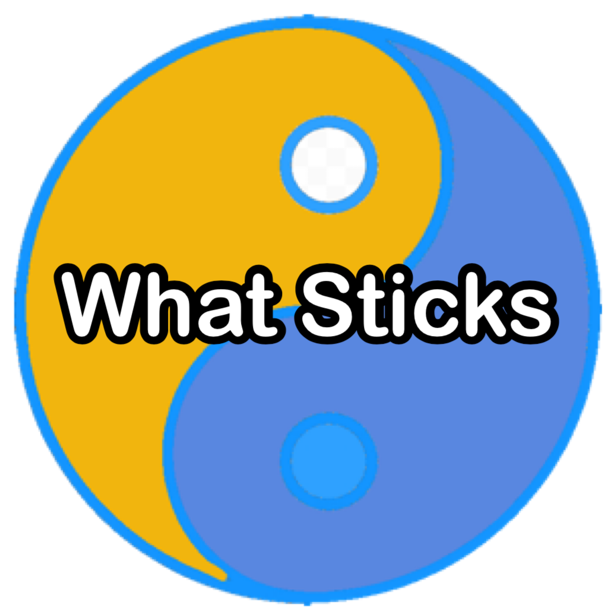

Nick's Personal Page
I am an indie maker.
As an economist for 15 years, I started to see the immense power that large datasets could have and I wanted to be leverage it for things I think the world could use.
What Sticks (WS) is an application that helps navigate your wellness with data already being collected by your
other applications and devices.

The primary driver for building What Sticks is a desire to leverage data that I know already exists to build meaningful and personalized wellness benchmarks. I believe that with a little bit of navigating our everyday applications and devices can start working to provide us insights that really move the needle and improve our lives.
The primary driver for building What Sticks is a desire to leverage data that I know already exists to build meaningful and personalized wellness benchmarks. I believe that with a little bit of navigating our everyday applications and devices can start working to provide us insights that really move the needle and improve our lives.
Here are some of my recent posts
{% for post in display_post %}
{% if post.counter %}
{{ post.counter }} posts from {{ post.social_name }}
{{ post.post_date }}
{% if post.social_name == "Github" %}
Repoository Name: {{ post.title }}
{% else %}
{{ post.title }}
{% endif %}
{% if post.description != None %}
{{ post.description }} {% endif %}
{{ post.description }} {% endif %}
You can find me
Medium: Nick Rodriguez
Twitter: @EvryMnRodriguez
Github: costa-rica
LinkedIn: Nick Rodriguez
Goodreads: costa-rica
Email: nick@dashanddata.com